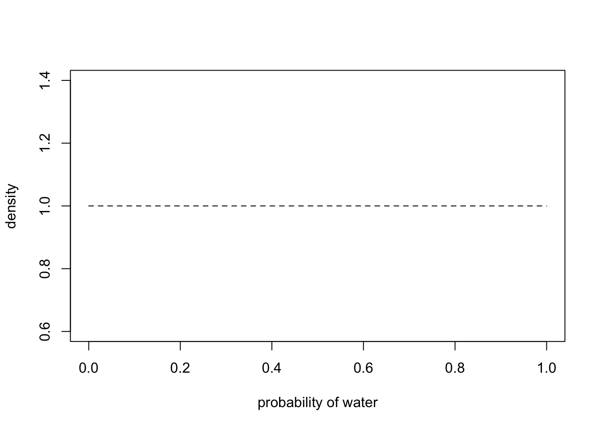

Explorations in Richard McElreth’s Statistical Rethinking course. As of 9/2025 we are at a point where the online lectures are from the unreleased third edition of his book. This document is an effort to follow along with the current lectures using a combination of the second edition and the new lectures.
#install.packages(c("coda","mvtnorm","devtools","loo","dagitty","shape"))#remotes::install_github("stan-dev/cmdstanr")#devtools::install_github("rmcelreath/rethinking")# List of packages to check and installpackages_to_install <-c("coda","mvtnorm","devtools","loo","dagitty","shape")# pak checks to see if a library is installed and if not installs it from either CRAN# or GitHub depending on its specificationif (!require("pak")) {install.packages("pak")}
Calculate the likelihood of landing on water 6 times out of 9 tosses of the globe for each probability in the grid. The likelihood is the probability of producing the data given a specific probability, or
\[
P(W, L|p)
\]
where W is the number of tosses landing on water, L is the number of tosses landing on land, and \(p\) is the hypothesized proportion of water on the globe.
Multiply the likelihood and the prior to compute the unstandardized posterior probability of each \(p\). Since we used a uniform prior, this graph is identical to the previous:
Standardize the posterior by dividing each unstabilized value by the sum of all values. This gives us the posterior distribution of possible proportions of water given that we have observed 6 water out of 9 tosses. Since we have a discrete set of possible proportions of water, the sum of standaridized probabilities will sum to 1.
To see how different priors affect the posterior probability distribution given the same data, let’s wrap our code in a function that takes different probabilities, priors, and data, and try a few different priors.
Recall that above we used a uniform prior. Now lets see what the posterior distribution looks like if we set the prior for all \(p\)’s less than .5 to 0 and all others to 1.
Here is the prior:
prior2 <-ifelse(p_grid <0.5, 0, 1)plot(p_grid, prior2, type ="b")
And here is the posterior probability distribution:
This should not be surprising: because the posterior probability distribution is computed by multiplying the likelihood by the prior. Any possible proportion of water with a prior of 0 will have a posterior probability of 0 no matter what data we observe.
Let’s look at a different prior:
prior3 <-exp( -5*abs(p_grid -0.5))plot(p_grid, prior3, type ="b")
In this example we were estimating the posterior of just one parameter \(p\) with 20 possible values; however, many realistic models will have many more parameters, each with far more possible values. Grid approximation is computationally infeasible for such combinations. Instead, we can use other methods, such as quadratic approximation that uses a Gaussian distribution to approximate the posterior distribution. A Gaussian distribution is described by only two numbers: its mean and its variance. This method is called “quadratic approximation” because a Gaussian distribution forms a parabola and a parabola is a quadratic function.
To do quadratic approximation we’ll use quap from the rethinking package. For the globe tossing data we can use quap by providing formulas that specify the likelihood and a prior:
mean sd 5.5% 94.5%
p 0.6666664 0.1571339 0.4155361 0.9177966
To graph the quadratic approximation, we can graph a Gaussian with the mean and standard deviation reported above. Here, we graph the grid search posterior on the left and the quadratic approximation on the right. Note that the shape of the distributions are similar, but the y-axis values are different. This is because the grid approximation is a discrete probability distribution, where the probabilities of the 20 points sum to 1, but the quadratic approximation is a probability density in which the area under the curve sums to 1.
A quadratic approximation is most accurate near the mode of the distribution. Unlike the grid approximation, the quadratic approximation shows a non-zero probability for a globe where \(p = 1\) despite the data containing a mixture of water and land.
We can also compare the quadratic approximation to the exact posterior distribution by using the beta distribution. The beta distribution is defined on the interval from 0 to 1 by two parameters \(\alpha\) and \(\beta\). When \(\alpha = 1\) and \(\beta = 1\), the beta distribution is a uniform distribution from 0 to 1:
curve(dbeta(x, 1, 1), lty=2, xlab="probability of water", ylab="density")

In the globe tossing example, we can use \(\text{Beta}(1, 1)\) to specify a uniform prior for all proportions of water on the globe from 0 to 1. The beta distribution is the conjugate prior of the binomial distribution, which in practical terms means that if we specify a prior probability distribution over \(p\) as \(\text{Beta}(\alpha, \beta)\) and then observe water \(W\) times and land \(L\) times, the exact posterior distribution is given by
\[
\text{Beta}(\alpha + W, \beta + L)
\]
So with a uniform prior over \(p\), the posterior distribution is simply
\[
\text{Beta}(1 + W, 1 + L)
\]
Let’s plot the exact posterior distribution (the solid line) along with the quadratic approximation (dashed):
A quadratic approximation can get better with more data points. Suppose we observe 100 tosses with the same proportion \(p=.7\) of water on the globe.
# Simulate 100 tosses of the globe where 1 indicates landing on water# Sum to get the number of tosses that land on waterW <-sum(rbinom(100, 1, .7))L <-100- W# Use quadratic approximation to estimate the posterior with 100 observationsglobe.qa <-quap(alist(W ~dbinom( W+L ,p) , # binomial likelihoodp ~dunif(0,1) # uniform prior) ,data=list(W=W,L=L) )# display summary of quadratic approximationprecis( globe.qa )
mean sd 5.5% 94.5%
p 0.6999995 0.04582542 0.6267616 0.7732373
We can use the posterior distribution to predict future data points. This gives us the posterior predictive distribution of plausible new observations, given our posterior distribution, which is based on the prior and the observations we have seen so far.
# Calculate the posterior distribution given a uniform prior over all# possible values of proportion of water on the globe # and sample probabilities from that distributionpost_samples <-rbeta(1e4, 6+1, 3+1)# For each sampled probability, toss the globe 10 times and count# the number of times it lands on waterpred_post <-sapply(post_samples, function(p) sum(sim_globe(p,10)=="W"))# Summarize the results in a table from 0 to 10 tab_post <-table(pred_post)# Calculate distribution of W given just p = 0.64pred_post_p64 <-replicate(1e4, sum(sim_globe(0.64,10)=="W"))hist(pred_post_p64)for (i in0:10) lines(c(i,i), c(0,tab_post[i+1]), lwd=4, col=4)
Describe association between adult weight and height
Step 2: Scientific model with sketch of causal assumptions
We make this causal. Height causes weight, so weight is a function of height \(H\) and unobserved stuff \(U\):
\[
W = f(H, U)
\]
We can also draw a simple causal DAG for this model. Here U is unobserved, but ggdag does not indicate this on the graph. We can use this by using ggplot to plot the dag, but that adds too much complexity.
library(ggdag)
Attaching package: 'ggdag'
The following object is masked from 'package:stats':
filter
dag <-dagify(W ~ H + U, latent =c("U"), coords=time_ordered_coords())ggdag(dag) +theme_dag()
Step 3: Use the sketch to define a generative model
Create a generative model of weight as a function of height and unobserved stuff. \(a\), the intercept, is not used here, presumably because we know that when height is zero, weight must be zero, so the correct intercept is always zero. We need to check this with McElreath’s later use of linear regression to be sure this is the case.\(a\) does appear in the statistical model, because we need to model an intercept for the regression lines.
# R code 3.2sim_weight <-function(H, b, sd) { U <-rnorm(length(H), 0, sd) W <- b*H + Ureturn(W)}
Now that we have a generative model, let’s simulate and plot some data:
Step 4: Use the generative model to build an estimator
We want to estimate how the average weight changes with height:
\[
E(W_i|H_i)=\alpha + \beta H_i
\]
This means that we want the posterior distribution of the parameters that define the regression line given a dataset. The posterior probability of a specific line is:
\[
\text{Pr}(\alpha, \beta, \sigma | H_i, W_i)
\]
where \(\alpha\) is the intercept, \(\beta\) is the slope, and \(\sigma\) defines the error around the line: how much variation there is in individual people around the expectation.
This probability is a function of the number of ways we could see the observation \(W_i\) given \(W_i, \alpha, \beta\) and \(\sigma\) times the prior probability of \(\alpha, \beta\) and \(\sigma\):
Now that we have specified some priors, we can do a prior predictive simulation to check the priors and plot some lines based on the priors for \(\alpha\) and \(\beta\) that we have specified above.
Test the statistical model with simulated observations from the scientific model. quap calculates the posterior distribution and precis gives a summary of the marginal distributions of each unknown.
Questions:
How do we get the complete distributions for each unknown
How do we get the posterior joint distribution for all three. This should be a 3-dimensional distribution that we could plot.
Given the model, are the distributions of all of these variables independent?
# Simulate a sample of 3 peopleset.seed(93)H <-runif(10, 130, 170)W <-sim_weight(H, b=0.5, sd=5)# run the model on the simulated datam3.1<-quap(alist( W ~dnorm(mu, sigma), mu <- a + b*H, a ~dnorm(0,10), b ~dunif(0,1), sigma ~dunif(0,10) ), data =list(W=W, H=H))# summaryprecis(m3.1)
mean sd 5.5% 94.5%
a 5.1936596 9.42967203 -9.8767775 20.2640968
b 0.4858079 0.06515645 0.3816753 0.5899404
sigma 5.6393361 1.29435788 3.5707022 7.7079700
When testing, we should change the simulation inputs above and check that the estimator is recovering them.
Step 5: Analyze the Data
Now that we have validated the estimator we can analyze the data
dat <-list(W=d2$weight, H=d2$height)m3.2<-quap(alist( W ~dnorm(mu, sigma), mu <- a + b*H, a ~dnorm(0,10), b ~dunif(0,1), sigma ~dunif(0,10) ), data = dat)# summaryprecis(m3.2)
mean sd 5.5% 94.5%
a -43.3772423 4.17137608 -50.0439069 -36.7105776
b 0.5717443 0.02695475 0.5286654 0.6148232
sigma 4.2533439 0.16179870 3.9947584 4.5119295
To look at details can use pairs.
The diagonal plots the probability density of the posterior distribution of each of the unknowns.
The three graphs in the upper right plot the relationship between each pair of unknowns
Note that \(a\) and \(b\) are strongly related. This is because a b (the slope) of the line increases, a (the intercept) must necessarily decrease and visaversa. You cannot interpret the intercept and the slope separately. This is also why, in more complex linear regression with additional covariates, you cannot use a table of coefficients to understand what the model is doing, because each is dependent on the others. (Read about the Table 2 Fallacy for more information). Instead you need to “push out posterior predictions”??
pairs(m3.2)
Warning in par(usr): argument 1 does not name a graphical parameter
Warning in par(usr): argument 1 does not name a graphical parameter
Warning in par(usr): argument 1 does not name a graphical parameter
To “push out posterior predictions” we extract samples from the posterior. These samples have the right covariance structure across each row (each sample). The samples for each parameter represent the posterior distribution. These are not posterior predictive samples. The parameter posteriors represent plausible values for each parameter. In contrast, posterior predictive samples give plausible values for new observations.
We can also “watch” the Bayesian updating process by feeding quap the data incrementally.
Here is a set of lines after just one row of data:
# Set up a 2x2 plot arraypar(mfrow =c(2, 2))#, pty = "s") # pty = "s" ensures square (1:1 aspect ratio) plots# Define sample sizessample_sizes <-c(5, 10, 50, 100)for (n in sample_sizes) {# Subset data d2n =head(d2, n) datn <-list(W=d2n$weight, H=d2n$height) m3.2n <-quap(alist( W ~dnorm(mu, sigma), mu <- a + b*H, a ~dnorm(0,10), b ~dunif(0,1), sigma ~dunif(0,10) ), data = datn ) post <-extract.samples(m3.2n)# Plot regression lines from posterior samplesplot(d2$height, d2$weight, col=2, lwd=3,xlab ="height (cm)", ylab ="weight (kg)", main =paste0("N=", n),asp=1)for ( j in1:20 )abline(a=post$a[j], b=post$b[j], lwd=1)}
# Reset plotting parameters to defaultpar(mfrow =c(1, 1), pty ="m")
In Bayesian regression there is no single line, you have to sample lines from the posterior, which is why McElreath says the posterior is full of lines. You want to use the entire posterior—there is not one line that is the right answer.
These lines estimate the average weight for a person with a given height.
Let’s return to the graph after estimating the posterior with the full dataset:
This plots a sample of lines drawn from the posterior, but does not show \(\sigma\). We can also plot the confidence/credible intervals (which is this here?) based on sigma. This looks like we are now drawing from posterior predictive samples to create a posterior predictive distribution.
McElreath’s 2023 - 03 video lecture does not explain this code very well, so I will step through it here in detail.
We first create a list of ranging from low to high:
Next, we use the posterior distribution to draw 1000 simulated weights for each height. Note that this is sampling over all the lines represented by the complete posterior. When graphed, the samples for each of the weights look like this:
W_postpred <-sim(m3.2, data=list(H=height_seq)) # sim defaults to N = 1000 samples for each inputplot(rep(height_seq, 1000), as.vector(W_postpred))
There is a lot of overplotting in this graph so it is hard to see the distribution of the values in each column.
library(ggplot2)library(tidyr)# Convert to long formatdf <-data.frame(W_postpred)colnames(df) <- height_seq # Use x_vals as column namesdf$row <-1:1000df_long <-pivot_longer(df, -row, names_to ="x_val", values_to ="y_val")df_long$x_val <-as.numeric(df_long$x_val)ggplot(df_long, aes(x =factor(x_val), y = y_val)) +geom_violin(fill ="lightblue", alpha =0.7) +geom_boxplot(width =0.1, outlier.shape =NA) +labs(x ="X Values", y ="Posterior Values") +theme(axis.text.x =element_text(angle =45, hjust =1))
We can also use the values to graph the posterior mean at each height and the 95% credible interval. The 95% credible interval means that there is a 95% chance that the true mean lies within the interval.
library(dplyr)
Attaching package: 'dplyr'
The following objects are masked from 'package:stats':
filter, lag
The following objects are masked from 'package:base':
intersect, setdiff, setequal, union